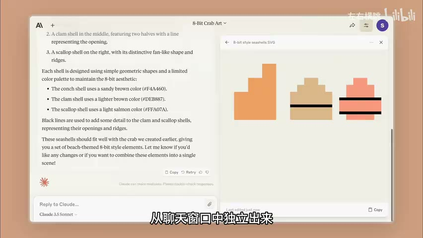

原视频 · 在线回看
点击后联网加载 B 站播放器；本地不下载整段视频。

原视频 · 在线回看
点击后联网加载 B 站播放器；本地不下载整段视频。
来源：AI 产品形态交汇的背后：Artifacts, Canvas, Cursor…【趋势总结 1】
UP 主：左右横眺 · 12 分 56 秒 · 深度阅读
链接：https://www.bilibili.com/video/BV1DAqWYUECX/
我们在聊天窗口里让 AI 写一段内容，拿到结果以后，工作往往还没有完成。文章要复制进文档，代码要移到编辑器，图表要放进报告。发现某一处不满意，再回到聊天窗口解释修改要求，等新结果出来，又要判断哪些部分变了、哪些内容需要重新搬过去。AI 已经帮我们生成了东西，使用它却仍然有不少来回。
这段距离，是许多 AI 产品开始改变界面形态的原因。聊天很适合提出要求和讨论，但持续修改一份作品，还需要一个稳定的地方容纳它。Artifacts、Canvas、Cursor，以及一些笔记和画布产品，都在尝试让用户与 AI 围绕同一个对象合作。
这里讨论的是 2024 年末的产品形态。早期版本的具体功能与限制会继续变化，但它们面对的设计问题很清楚：用户正在改什么，AI 看到了哪些内容，修改结果怎样呈现，以及人在哪里继续接手。
早期代码解释器提供了一类能力：把文件、代码和数据放进受限制的运行环境，让模型通过执行程序完成分析，并产出图表或其他结果。受限制的运行环境通常称为沙箱，它给程序提供可工作的空间，同时规定能够访问和操作的范围。
这个方向解决的是“模型提出的处理方法能否真正执行”。如果用户上传表格，模型可以写出分析代码并取得运行结果，用户不必自己复制代码到另一套环境里执行。不过，能够算出结果，与能够顺畅地继续编辑结果，又是不同的问题。
Artifacts 突出了可视化预览。代码、文档、网页和 SVG 图形等产物，可以在独立区域中呈现。用户一边提出要求，一边看生成内容，不必总从聊天消息中辨认最终结果。SVG 是一种用形状与路径描述图像的格式，因此一份代码也可以直接对应可见的图形。
这次分离很重要。对话记录的是协商过程，其中可能包含问题、解释和多次修改；工作区呈现的是当前产物。用户可以继续讨论，又不必把每一段讨论都当成作品的一部分。两种内容各有位置，注意力也更容易回到正在完成的东西上。
可视化预览让结果更直观，却不必然带来精确编辑。早期 Artifacts 的一种限制，是用户选中内容后仍要回到聊天里描述修改，无法像普通编辑器那样直接处理所有细节。AI 理解要求时如果扩大了修改范围，就可能连带改变用户已经满意的部分。
例如，一个人只想调整一小段文字，理想的操作是让这段文字成为明确的修改对象。若只能重新说“把刚才那段稍微改一下”，系统还要判断“刚才那段”指什么、“稍微”允许改多少。界面没有提供的定位信息，就需要用户在语言里补上。
Canvas 进一步把文档或代码放到中心。聊天退到辅助位置，模型能力则通过选区和具体操作进入编辑过程。用户的关注点从“AI 下一条会回复什么”，转向“这份文档现在怎样了”。
但有按钮仍然不够。左右横眺指出，当时的一些修改操作缺少清楚的变化反馈：用户能看到内容在变，却未必知道具体改了多少。精确协作还需要让人理解修改范围和结果。预览、直接操作、执行环境、变化反馈，分别解决不同困难，不能用一个“有工作区”的标签概括全部体验。
Cursor 从另一个方向接近同一个问题。它首先是代码编辑器，文件、光标位置、选中的片段和项目目录，本来就有明确的组织方式。AI 进入其中以后，可以围绕当前代码进行补全、修改和解释，也可以在侧栏讨论思路。
这使上下文提供变得更自然。普通聊天需要用户把相关代码复制过去，再解释它来自哪里；编辑器已经知道当前打开哪个文件，也能让用户指定其他文件或文档作为参考。人仍然需要确认选中了正确资料，但交代背景的动作减少了。
为什么有人会用它写文章？因为一些基本操作是相通的。代码文件可以换成文字材料，续写与改写也需要知道当前位置和上下文；侧栏负责讨论，编辑器负责保留当前稿件。这个用途揭示了界面组织的可迁移性，并不意味着所有写作者都适合使用代码编辑器。
决定体验的，是作品与协作怎样安排。只要任务需要反复打磨同一份内容，固定的编辑区域、明确的选区和可以引用的材料，就可能有帮助。产品最初属于哪一个类别，并没有完全限定这些关系可以服务哪些工作。
笔记软件本来就保存了用户的文档、想法与知识。加入 AI 以后，问答、总结、翻译和改写这些功能看起来不新鲜，但它们可以直接利用已有材料。用户不必每次都重新介绍背景，也更容易把新产物放回原来的知识组织方式中。
Notion AI 的例子说明，功能价值不仅来自一次调用有多聪明，也来自调用发生在哪里。如果我们本来就在某份笔记里工作，能够就地处理相关内容，可能比切换到一个独立聊天网站更顺手。丰富的内容格式和组件，也为结果提供了更多承载方式。
这里还要区别两类产品目标。NotebookLM 当时更强调围绕导入资料进行问答和内容转换，资料是需要阅读和引用的对象；腾讯 ima 则把搜索、知识库与可编辑笔记放在一起，更强调把外部资料与个人创作接起来。
两者都可能有知识库问答，却不因此成为同一种工具。阅读一份来源文档，重点是理解它写了什么；编辑自己的笔记，重点还包括决定保留什么、怎样重新组织和表达。一个对象承担来源，另一个对象承担创作结果，允许的操作与需要保留的边界自然不同。
| 当前任务 | 主要对象 | 协作时最需要弄清什么 |
|---|---|---|
| 阅读和理解资料 | 导入的来源文档 | 回答依据哪份材料、哪一处内容 |
| 修改文章或代码 | 当前可编辑稿件 | 修改哪部分，其他部分是否保留 |
| 整理个人知识 | 已有笔记与新材料 | 新内容怎样与原有知识相连 |
| 探索多条思路 | 多个问题或方案分支 | 各分支怎样展开，又怎样相互引用 |
文档适合逐段展开一条讲述，但头脑风暴经常同时存在多条路线。我们可能先提出一个问题，得到几个方向，再分别追问其中两条。如果全部内容都进入同一条聊天记录，读者要不断记住每段回答属于哪个方向，也很难把几个结果并排比较。
Flowith 尝试把这些内容放到无限画布上，通过节点展开。一个问题可以继续产生后续内容，节点之间也可以引用与发散。思路的分支因此获得空间上的位置，不再只能依赖聊天的先后顺序来组织。
画布提供了另一种可能，也会带来新的整理要求。节点越来越多以后，哪些属于同一主题、哪些已经完成、哪些值得继续，都需要可理解的组织方式。空间自由有助于展开，不能自动保证关系清楚。它更适合需要比较和探索的过程，最终要形成连续文章时，仍然可能需要回到线性的表达。
左右横眺把这些产品概括为“AI 白板”：为人和 AI 提供共同的工作空间。这个称呼强调一种相似的设计方向，既包括文档式编辑器，也包括更自由的画布。它是一种分析视角，具体产品仍然有不同目标。
浏览器里的侧栏助手，看起来可能与编辑器相差很远，但它也把一个正在处理的对象放在主体位置。主体是网页，AI 在旁边帮助解释、总结或讨论。用户不用先离开当前资料，再建立一次完全独立的对话。
这让 Copilot，也就是“副驾驶”的含义更具体了。人继续在熟悉的环境里做事，AI 取得必要上下文，在需要的位置提供帮助。合作的重点是减少表达和切换成本，同时让用户保留对结果的理解与控制。
如果一项功能必须靠很复杂的提示词才能用好，那么它对熟练用户可能有价值，对普通用户却仍有门槛。把选择对象、指定操作和查看结果做进界面，能够替用户承担一部分原本需要用语言反复说明的工作。这也是为什么产品设计会影响人们实际用出的能力。
这些界面变化背后，还有两条不同的产品路径。一条从模型能力出发，逐步增加文档、执行环境和工作区；另一条从已有软件出发，把 AI 放进用户已经熟悉的文件、笔记或网页工作中。
前一条路径可以围绕新的模型能力重新设计体验，但需要逐步补齐具体工作中的细节。后一条路径拥有已有的内容、用户习惯和操作环境，也要判断 AI 怎样进入其中才真正有用。简单添加一个聊天按钮，并不保证用户原来的困难就得到解决。
左右横眺在当时的分析里认为，模型公司会更主动地开发面向用户的产品，应用公司也会持续吸收 AI 能力，双方可能越来越接近。他对竞争与商业压力的判断属于那个阶段的观察，不能仅凭几款产品相似，就断定哪家公司最终占据优势。
更稳定的一点是，界面点子容易被学习，持续把体验做好需要更多工作。生成结果如何保留、修改如何确认、资料怎样组织，每一处都可能影响用户是否愿意继续使用。一个先出现的形式能够吸引注意，长期价值还需要在具体任务里不断完善。
这些产品的共同变化，是让用户与 AI 围绕一个明确对象合作。对话承担商量，工作区保留产物；编辑器让修改位置更明确，知识工具提供已有资料，画布则允许多个方向同时展开。
不同能力仍然需要分别看待。能预览，不代表能精确修改；能生成代码，不代表已经运行；能引用资料，也不代表可以改写来源。界面越清楚地呈现这些关系，人越容易知道自己正在做什么。
我们理解一个 AI 产品时，可以先看任务：是阅读资料、打磨作品，还是探索方案？再看它怎样安排对象、上下文和操作。这样更容易判断一个新界面究竟减少了哪些负担。
为什么把生成结果从聊天记录里分离出来，会改变修改体验？如果只能看预览、仍无法精确指定修改，哪一部分困难还在？
同样带知识库问答，阅读原始资料与编辑个人笔记有什么不同？哪些内容应当保留来源身份，哪些内容可以作为自己的稿件修改？
面对需要比较的三条研究路线，一条长聊天与一张节点画布各自有哪些好处？等探索结束、准备写成文章时，组织方式又可能怎样变化？